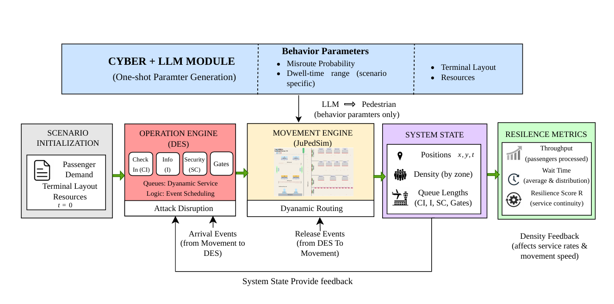
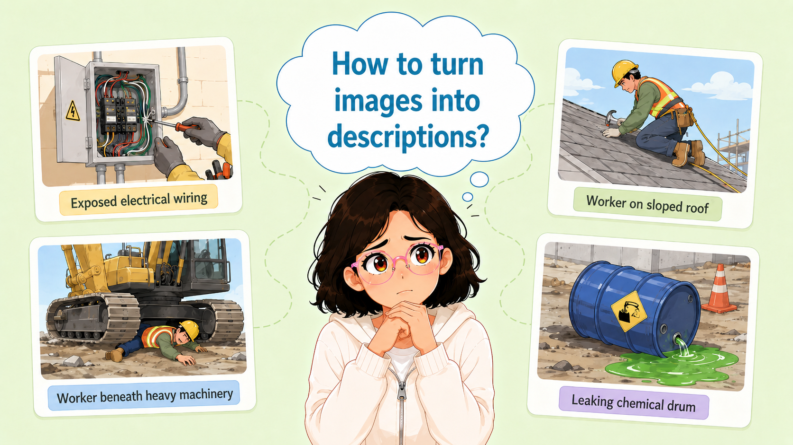
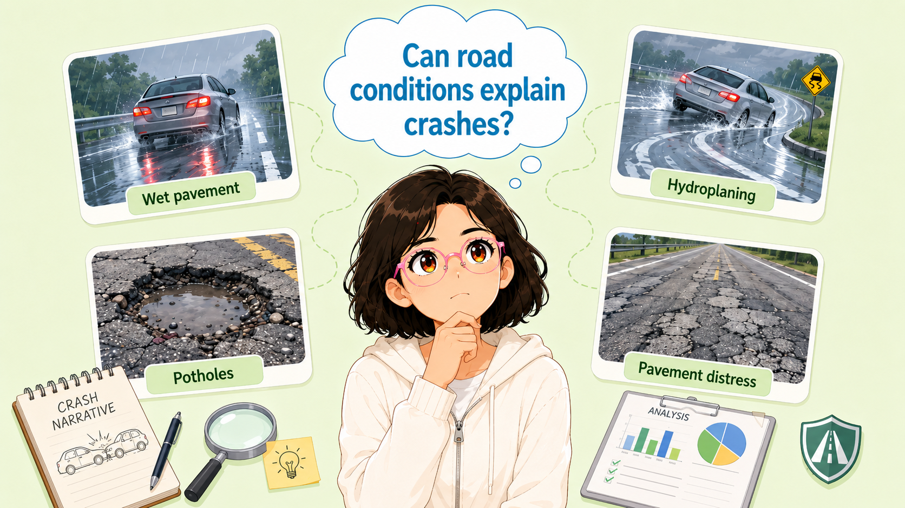
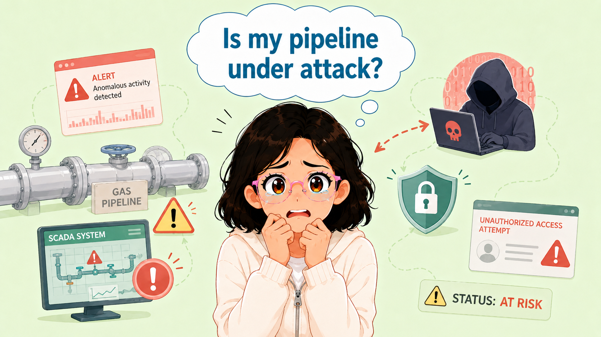
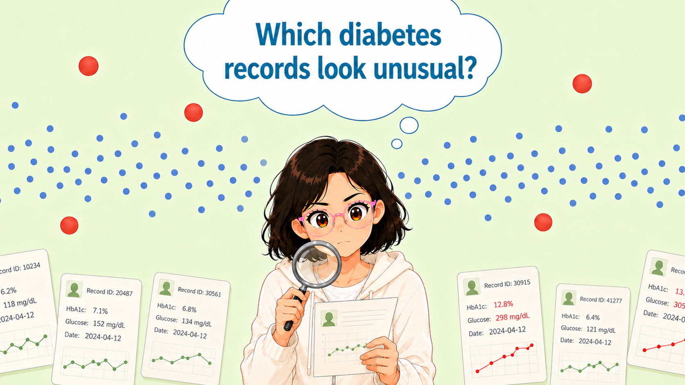
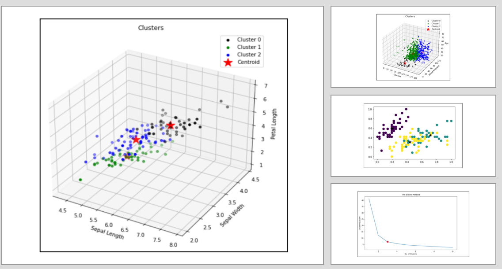
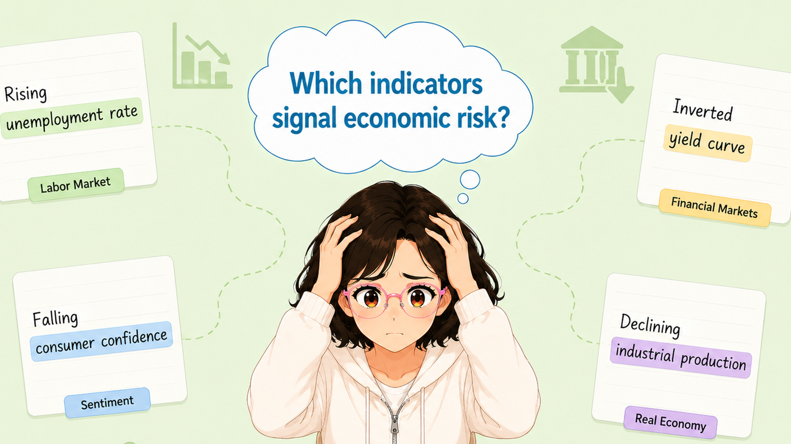

Tejaswini Katale 🙋♀️
Humans bring ideas. AI brings intelligence. Together, they build smarter real-world solutions.
Hi, I am a Master’s student in Computer Science at the University of Houston and am currently working as a Research Assistant with Prof. Lu Gao, My work has helped me see how AI can be used to understand real world problems and support better decisions.
I hold a Bachelor's degree in Computer Engineering from Vishwakarma Institute of Technology, India (2020 - 2024). I also gained one year of research experience as a Graduate Research Assistant under Prof. Santosh Shinde, where I worked on machine learning methods for forecasting and data analysis in healthcare.
Research Interests:
- Human Centered AI
- AI for decision support

University of Houston, Texas
Expected Graduation: May 2027
News
Selected Publications
Special Issue Mathematical Methods in System Engineeing Modeling and Simulation.

To be Published (Expected June 2026)

To be published (Expected June 2026)





Service
2026, 5th International Conference on Distributed Computing and Electrical-Electronic Circuits (ICDCECE)
2026, 1st IEEE International Conference on Instrumentation (INSTCon)
2025, International Conference on Data Science and Information Systems (ICDSIS)
2025, International Conference on Intelligent Computing and Knowledge Extraction (ICICKE)
USDOT Cyber-CARE UTC National Transportation Cybersecurity Competition, Link